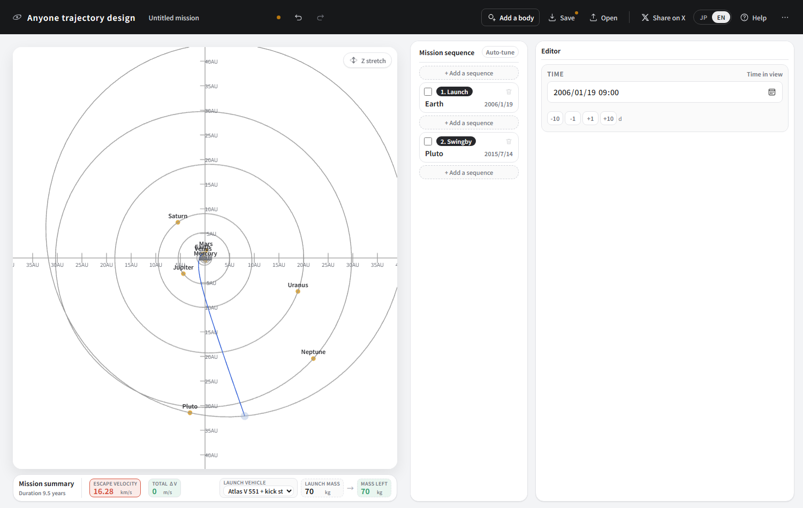
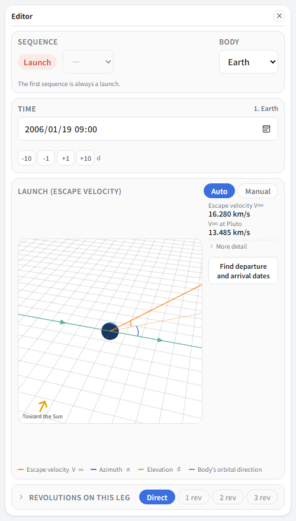
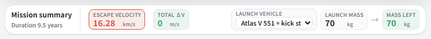
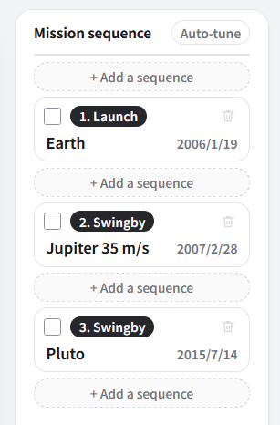
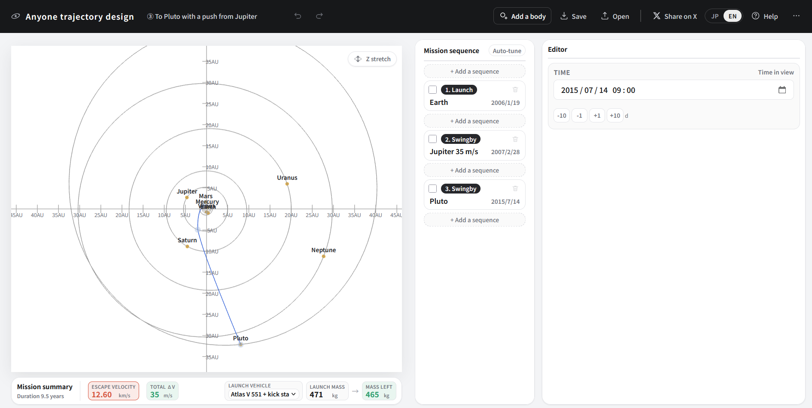
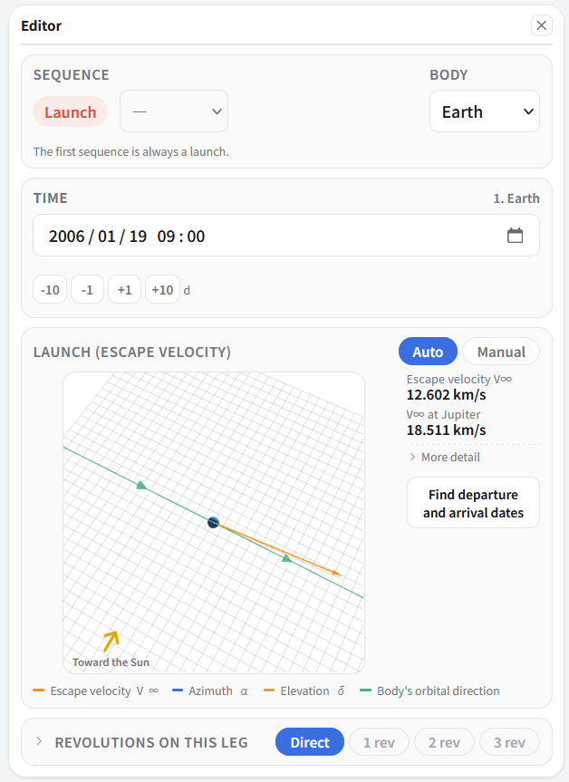
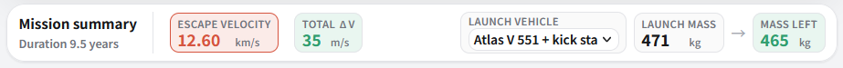
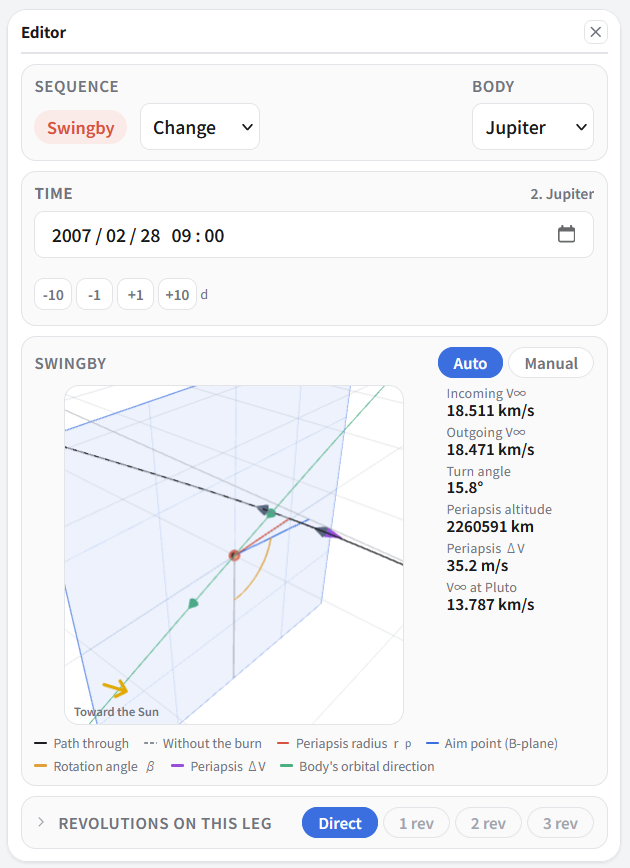
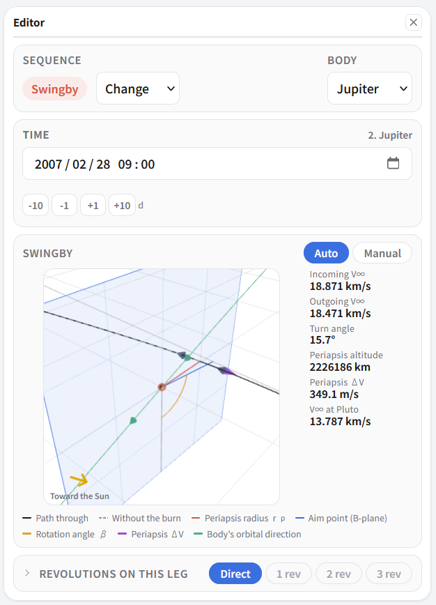
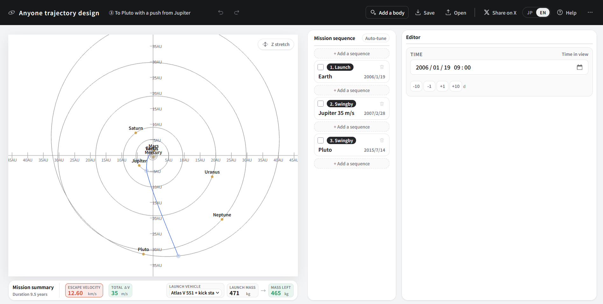

③ To Pluto with a push from Jupiter
New Horizons, launched in 2006, took nine and a half years to reach Pluto. The key was Jupiter, which it passed thirteen months after launch. This is the simplest tutorial — just three sequences in a row — but it shows plainly how large Jupiter's gravity is.
What you will learn here
- What a Jupiter swingby is worth (a different scale from Venus or Earth)
- Choosing a launch vehicle (→ the capability curves)
- How narrow a launch window can be
First, go without Jupiter
Make two sequences: Earth first, then a swingby at Pluto (just a pass). Use New Horizons' own dates: leaving 2006/01/19, arriving 2015/07/14.
Set Launch vehicle in the summary bar to “Atlas V 551 + kick stage”. That is what New Horizons actually flew on — an Atlas V with a solid Star 48B upper stage on top. Left on the H3-24, it does not come close to this C3.
Which vehicle reaches how far is laid out in What rockets can launch, with curves for thirteen of them.



70 kg. That is not a spacecraft. And this is not simply because Pluto is far away: the faster you try to arrive, the more it costs. Arriving in the same nine and a half years takes this much energy.
Putting Jupiter in between
-
Start again with three sequences. All of these are New Horizons' real dates.
No. Type Body Date 1 Launch Earth 2006/01/19 2 Swingby Jupiter 2007/02/28 3 Swingby Pluto 2015/07/14 



70 kg became 471 kg — about 6.7 times. The real New Horizons weighed 478 kg. The number comes out very nearly as flown.
It bends you from 2.26 million km away

Look at the periapsis altitude: 2260591 km. 2.26 million kilometres. That is six times the Earth–Moon distance (380 thousand km).
Venus in tutorial ② was 5681 km; the Earth we use in ⑤ is 16 thousand km. Passing at 2.26 million km — nowhere near grazing it — it still bends the path by 15.8 degrees. That is the scale of Jupiter's gravity. And the other way round: come closer and it bends more. How far it can bend is covered in Swingbys, part 1.
| Body | Periapsis altitude | Turn angle | Tutorial |
|---|---|---|---|
| Venus | 5,681 km | 34.0° | ② |
| Earth | 16,000 km | 63.3° | ⑤ |
| Jupiter | 2,260,591 km | 15.8° | ③ (this page) |
By turn angle alone Jupiter looks the weakest, but that misreads it. Jupiter adds a great deal of speed outright. You approach at 18.511 km/s and leave at 18.471 km/s — as seen from Jupiter, the speed is unchanged. But Jupiter itself moves round the Sun at 13 km/s, so as seen from the Sun the velocity leaps here. That is why you arrive at Pluto at a ferocious 13.787 km/s.
The periapsis ΔV is 35.2 m/s — very nearly free. Simply passing 2.26 million km away multiplies the spacecraft's mass by 6.7.
The window is narrow
Move the launch date twenty days later, to 2006/02/08. Then select the Jupiter sequence again.

Twenty days, and the fuel demand is ten times higher. Shift it further and Earth, Jupiter and Pluto fall out of their near-alignment, until calling at Jupiter “on the way” is no longer possible at all.
| Shift the launch | Launch energy | Periapsis ΔV |
|---|---|---|
| −40 days | 267.1 | 906 m/s |
| −20 days | 189.9 | 380 m/s |
| as flown | 158.8 | 35 m/s |
| +20 days | 195.5 | 349 m/s |
| +40 days | 330.2 | 634 m/s |
New Horizons' real launch window was about three weeks across January and February 2006. After two scrubs — high winds, then a power cut on the ground — it flew on the third attempt. Missing that window would have delayed arrival by years, for want of Jupiter.
The finished article

| Item | This design | The real New Horizons |
|---|---|---|
| Launch | 2006/01/19 | 2006/01/19 |
| Launch energy C3 | 158.80 km²/s² | 157.8 km²/s² |
| Launchable mass | 471 kg | 478 kg |
| Jupiter swingby | 2007/02/28 | 2007/02/28 |
| Distance from Jupiter | 2.26 million km | 2.30 million km |
| Arrival at Pluto | 2015/07/14 | 2015/07/14 |
| Relative speed at Pluto | 13.787 km/s | 13.8 km/s |
Three dates and a choice of rocket, and the real spacecraft's numbers fell straight out. It is a good example of what trajectory design comes down to: deciding when you go and what you pass on the way.